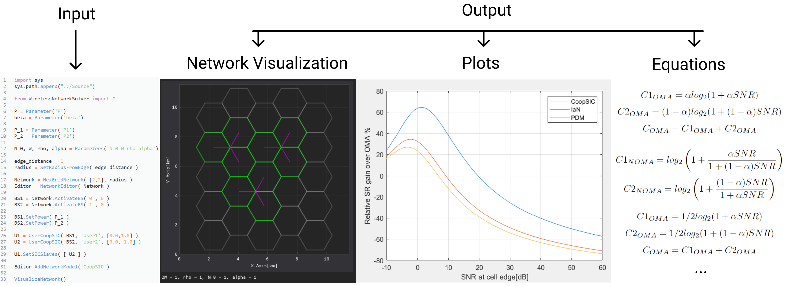
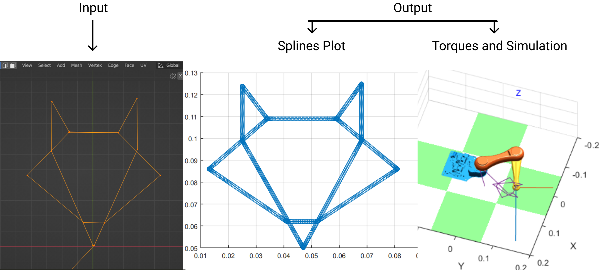
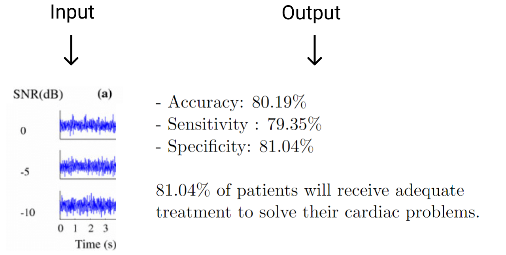
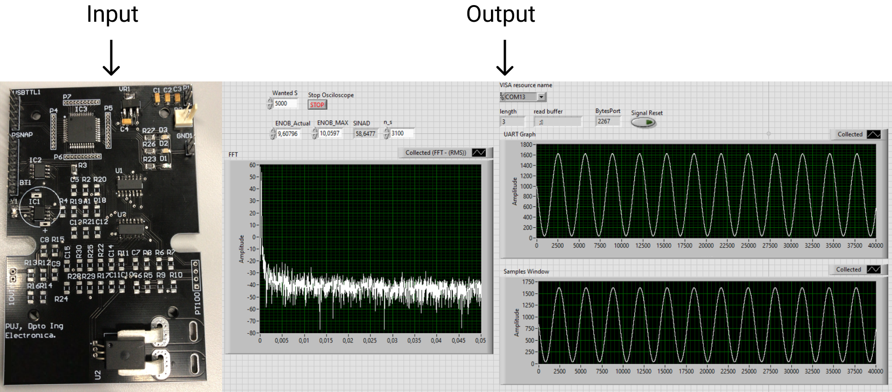

Sergio Lavao Osorio
Pontificia Universidad Javeriana, Bogotá, Colombia
s.lavaoo@javeriana.edu.co
Research interests
Wireless Networks, Machine Learning and Signal Processing.
Projects
Wireless Network Tool (2023): An OpenSource tool designed for a research project on the field of Wireless Networks, studying a NOMA technique called Cooperative Successive Interference Cancelation. The tool is used for automation of analytical deterministic results and comparisons of sum rates between multiple models such as OMA, PDM, IaN and CoopSIC on an arbitrary network setting using Python libraries such as Numpy, Sympy and DearPyGui.
Credits: Maria Paula Carreño, Sergio Lavao Osorio.

knowledge: Matlab, Python, Wireless Systems and Information Theory.
Download paper (Spanish)PLUMABot (2022): Final class project, a low cost (10$) 2DoF planar robot controlled using Python based on given Blender coordinate points, made with BYJ-28 Stepper motors, 3D printed parts and an ATMEGA-328P microcontroller.
Credits: Maria Paula Carreño, Sergio Lavao Osorio.

Result

knowledge: C, Matlab, Python, Blender, Altium and Control Theory.
Download paper (Spanish)AF Detection (2022): Atrial fibrillation classification from a single lead of ECG recording using machine learning algorithms such as deep neural networks and support vector machines.
Credits: Juan Sebastian Bravo, Daniel Zambrano, Sergio Lavao Osorio.

knowledge: Python and Machine Learning.
Download paper (Spanish)Early Warning System (2021): Final class project that involves the development of a sensor system that can monitor three critical variables - Strain, Current, and Angle - and provide early warnings in case of any deviations or anomalies. The signals from the sensors are first conditioned using both analog and digital filters to remove any noise and interference using an PIC18F47 Microcontroller. The conditioning process allows the system to achieve a dynamic range of up to 60dB, BW 120Hz. The system continuously monitors the signals and compares them to predefined thresholds to detect any abnormal behavior. In case of any deviations, it triggers an early warning and can be monitored and visualized on the browser.
Credits: Maria Paula Carreño, Ludy Fajardo, Sergio Lavao Osorio.

Result

knowledge: Osciloscope, Assembly, C, Python, TypeScript, Altium, LabView and Signal processing.
Download paper (Spanish)Game Development
Slippin' Dog (2023): Personal project made based on Robotics and Control with OpenSource software such as Godot4 and Blender, currently on development.
Credits: Sergio Lavao Osorio.
Result